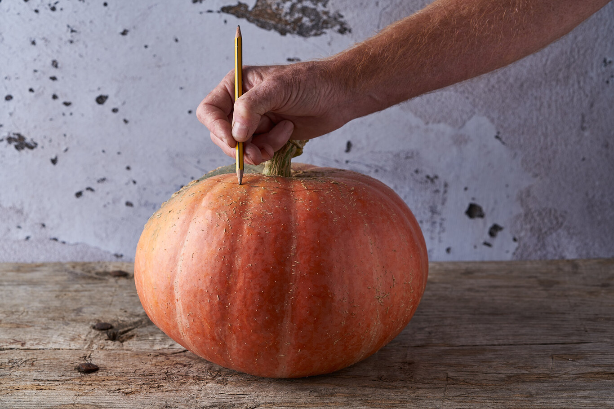
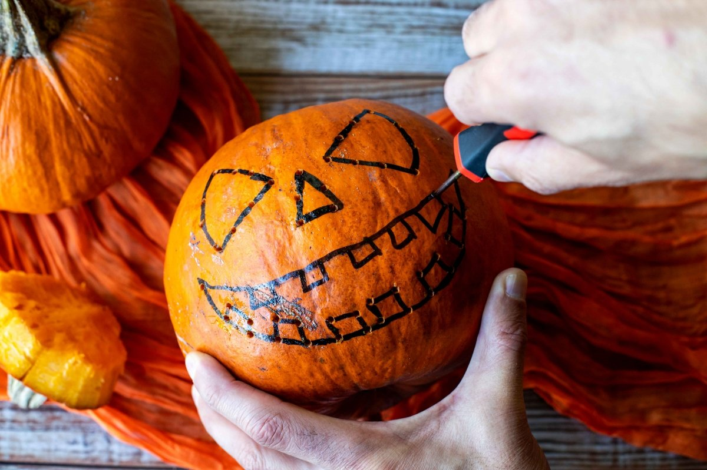
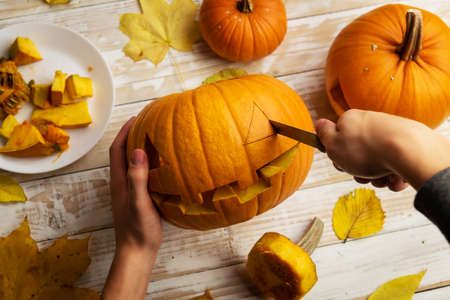
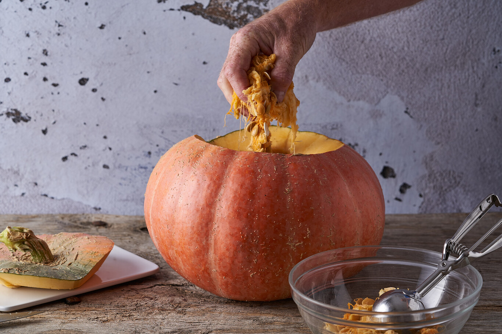
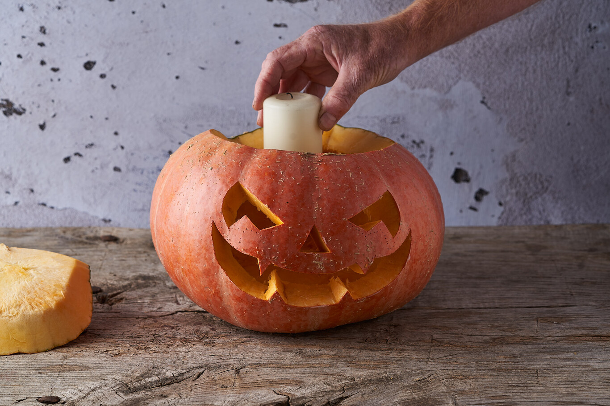

guiaclabaza
Cómo decorar una calabaza para Halloween
- Con un rotulador pintamos lo que será la tapa de la calabaza.

- Con el punzón marcamos una línea de precorte: vamos haciendo agujero a unos 2 o 3 cm de distancia hasta atravesar la cáscara. Esto nos ayudará después a cortar con el cuchillo.

- Con la punta del cuchillo, muy poco a poco e intentando ayudarnos de la guia que hemos realizado, cortamos la tapa de la calabaza.

- Vaciamos la calabaza retirando de su interior todo resto de pulpa suelta y semillas. Intentaremos dejar la calabaza lo más limpia posible en su interior.

- Cuando tengamos la calabaza lista podemos colocarte una pequeña vela en su interior y taparla. ¡Nos quedará una increible y monstruosa calabaza perfecta para la noche de Halloween!

Regresa a la página anterior